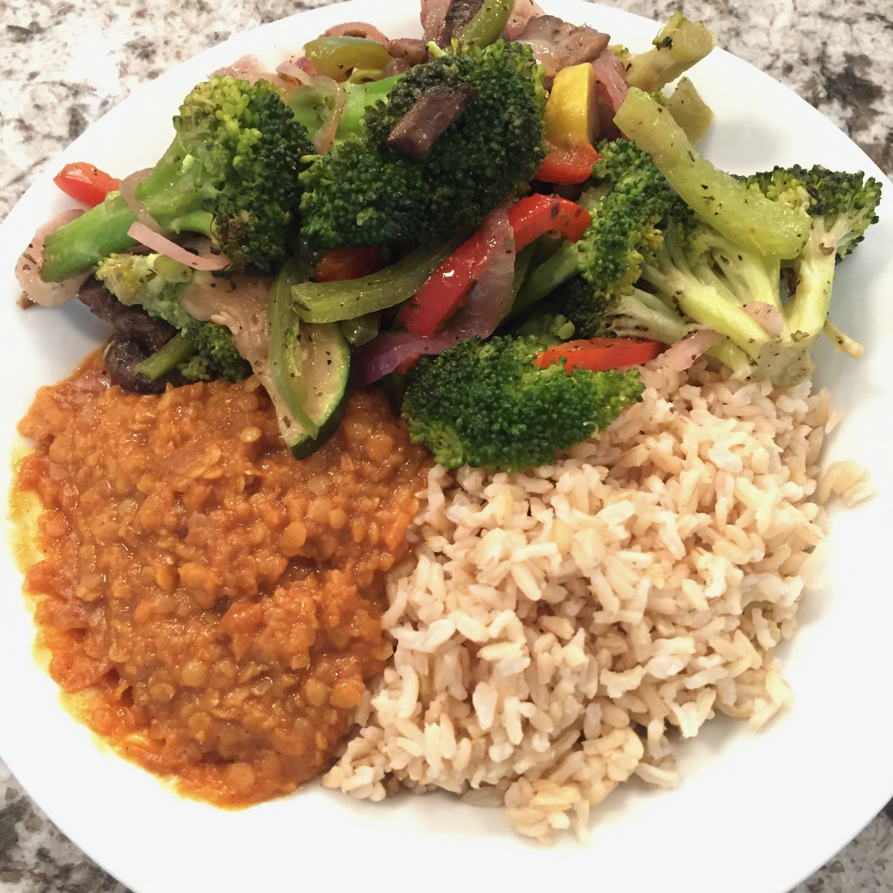

Home
Home
Stewed Red Lentils

Description
Stewed red lentils with warm spices that are easy to make, are delicious on their own or as a side dish, and are perfect for any day
Adapted from Mum's Everyday Red Lentils by Aarti Sequeira, Food Network
Ingredients
Lentils (Dal)
- 1 cup red lentils, washed and picked through
- 2 cups water
- 1 yellow onion, diced
- 5 cloves garlic, thinly sliced
- 1 1/2-in piece of ginger, peeled and minced
- 2 medium tomateos, diced
- 1 serrano chile, sliced lengthwise in half (optional)
Tempering Oil (Bagaar)
- 1/2 tsp cumin seeds
- 1/2 tsp mustard seeds
- 1/2 tsp turmeric powder
- 1/2 tsp paprika
- 1 tbsp vegetable oil
- 1 handful cilantro leaves, chopped
Steps
- Place the lentils in a bowl, cover with water, and soak for 30 minutes. Drain and set aside.
- In a medium saucepan, add the 2 cups of water, onion, garlic, ginger, tomatoes, chile, if using, and the lentils. Bring to a boil over medium-high heat. Skim any scum from the surface. Lower the heat, cover the pot with a lid and gently simmer until the lentils are tender, almost translucent, and almost falling apart, about 30 - 40 minutes.
- Whisk the lentils, releasing its natural starch, and mash some of them so the mixture becomes thick. Add salt, to taste.
- Separately, in a small bowl, combine the cumin and mustard seeds. In another bowl, combine the spice powders.
- In a small saucepan, over a medium-high flame, warm the vegetable oil. Once the oil is shimmering, add seeds and immediately cover to avoid oil and seeds popping out of the pot. Add the spices and let the mix "bloom" for no more than 30 seconds.
- Pour the oil mixture into the lentils and stir to combine. Serve and garnish with cilantro.